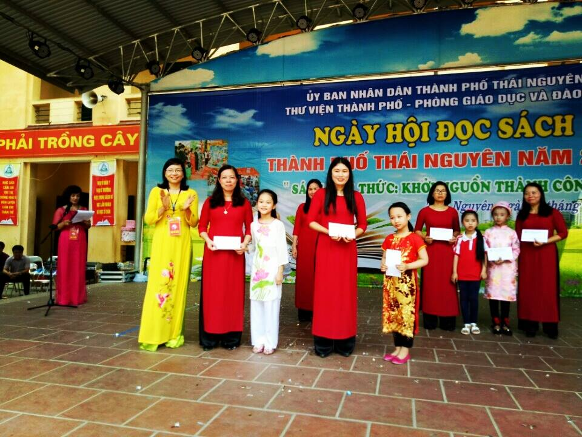

"Bác Hồ kính yêu" chủ đề trưng bày sách khối 4, trường tiểu học Nha Trang
Với chủ đề này, cô trò khối 4 xếp thành công mô hình “ Lăng Chủ tịch Hồ Chí Minh”. Lăng Chủ tịch Hồ Chí Minh là nơi lưu giữ thi hài Chủ tịch Hồ Chí Minh, người cha già dân tộc, người đã được UNESCO tặng danh hiệu Danh nhân văn hóa thế giới và Anh hùng giải phóng dân tộc.
.-Với 230 cuốn sách chúng tôi đã mô phỏng lăng chủ tích Hồ Chí Minh một cách sáng tạo được thiết kế gồm 3 lớp. Tổng thể mô hình lăng Bác hầu hết được cô trò chúng tôi sử dụng những cuốn sách có gam màu trầm, ấm, trung tính và nhẹ nhàng – tất cả nhằm thể hiện sự thanh liêm, chính trực, nếp sống bình dị và đức tính giản dị quý báu của Bác Hồ.

Bên cạnh mô hình chính chúng tôi còn xếp mô hình chữ “BOOK” từ 300 cuốn truyện “Conan” của thiếu nhi. Ngoài ra, trong gian trưng bày còn có những truyện thiếu nhi được xếp nghệ thuật ở hai giá sách cùng 42 cuốn sách về Bác Hồ được trưng bày, đặc biệt từ những cuốn sách giáo khoa, sách bài tập rất quen thuộc qua bàn tay khéo léo của cô và trò đã tạo nên 2 mô hình xoắn rất mềm mại và đẹp mắt.
Với gian trưng bày sách và xếp sách nghệ thuật của khối 4 về chủ đề: “Bác Hồ kính yêu” đã để lại rất nhiều ấn tượng cho các đại biểu và Ban giam khảo cùng các thầy cô giáo và các em học sinh đến tham quan.
Đặc biệt sang phần thi “ Kể chuyện theo sách”. em Vũ Thảo Uyên lớp 4G đã đem đến hội thi câu chuyện “ Người con gái miền Đất Đỏ” bằng giọng kể đầy hấp dẫn và truyền cảm, em đã để lại trong lòng khán giả, cùng ban giám khảo một sự cảm động sâu sắc về sự hi sinh anh dũng của nữ anh hùng Võ Thị Sáu khi nghe xong câu chuyện.
Tổng kết ngày hội đọc sách và xếp sách nghệ thuật. Qua đánh giá của Ban giám khảo gian trưng bày của khối 4 đã đạt giải Nhì ở hội thi. Tiết mục kể chuyện đạt giải Ba.

Đ/c Nguyễn Thị Linh - Giám đốc thư viện thành phố
trao giải Nhì phần thi xếp sách nghệ thuật cho cô và trò khối 4.